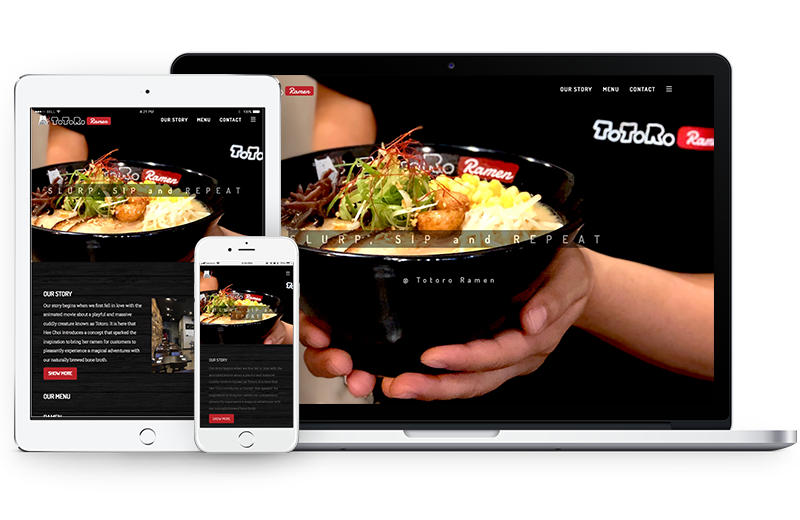

Digital,
Print
design and Front-End Development of Japanese Ramen Restaurant.
Type: UX/UI Design + Branding + Front-End Development + Photography My Role: I mainly focused on the branding and UX/UI design of tablet menu,
website. I also developed their website and analyzed the data used Google Analytics.

The Story
The client (owner) wanted to create a new brand for the
restaurant. They're a specialty store for Japanese ramen, and it is comfort food for everyone. I
started the interview and created a concept based on the name of the restaurant "Totoro (Japanese
animated character) Ramen." "Totoro " actually comes from mispronouncing Tororu, which means troll in
Japanese. I created a character inspired by a traditional Japanese lucky cat and troll. After we did
many times of discussion, I came up with ideas that combined with the shape of noodles and cat. Based
on the new brand, I designed the tablet menu, website, and other collaterals.
Brand Identity
Based on the meaning of the Totoro, I created a friendly, cute
character using elements of noodle and troll (cat). Because the shape of the noodles is unstructured and
smooth, I have drawn freehand style characters. Emotions of the brand are cute, freedom, friendly, kind and
pleasant.
Key elements : Bowl, Chopstick, Cat, Troll, Noodle, Brush,
Pen art
MOODBOARD
Initial Identity Exploration
Exploring lots of concept based on the ideas.
SKETCHES
Visual Design
FINAL LOGO : Dark and light background
COLOR SCHEME
ICON SETS : 2 styles with dark and light background. Using line
and simple colors for intuitive usage of tablet menu.
TYPEFACES : Dosis and Roboto Slab Google font for
Website, Tablet and Paper menu
UX/UI Design: Tablet menu
Using Adobe XD, Easy to deliver the design specs to developer.
Developers can see detailed design specs through the link. Tablet menu also has same concept with
their website. Using visual elements such as wood background, lined logo, main and accent color to it.
Based on the order process, I redesign first version. Customers choose a menu and add a cart and send
to order. Customers can customize their toppings, sauces, saltiness on ramen or other dishes. The
customer liked to order the menu without calling the server.
The restaurant has a tablet menu at each table but also needs paper
menus for users who don't familiar with the technology.
TAKE-OUT MENU
MENU DESIGN AND FOOD PHOTOGRAPHY
Responsive Web design & Front-End Development
Fully responsive the website has contents that story of the
restaurant, photos, descriptions of foods and full menu. Also using google maps shows directions to a
restaurant. This website build with Bootstrap, Html, CSS, Javascript, Google Cloudflare and also add Google
Analytics for marketing.
The client (owner) wanted to create a new brand for the
restaurant. They're a specialty store for Japanese ramen, and it is comfort food for everyone. I
started the interview and created a concept based on the name of the restaurant "Totoro (Japanese
animated character) Ramen." "Totoro " actually comes from mispronouncing Tororu, which means troll in
Japanese. I created a character inspired by a traditional Japanese lucky cat and troll. After we did
many times of discussion, I came up with ideas that combined with the shape of noodles and cat. Based
on the new brand, I designed the tablet menu, website, and other collaterals.